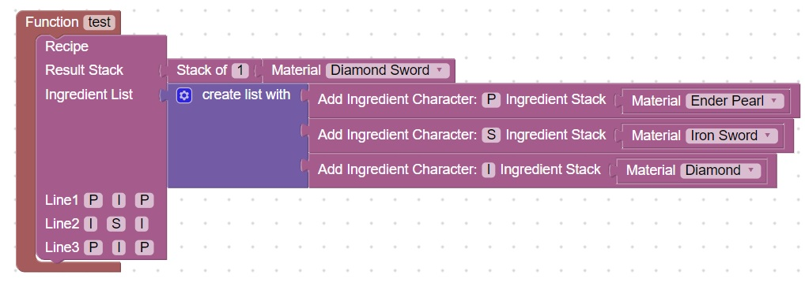

Recipe and special effect
Note: Before trying this homework, you should perform an update as described: here
- We will start by creating a recipe for a special
- We will give it a custom name
- We will check to see if it is inhand when the player clicks
- Extra Credit: Create a kill-aura effect when it is in hand and clicked
Starting recipe
Here is an example starting recipe, you can use your imagination to change the ingredients

After you have created this recipe, download the code, /reload, /js test() and confirm that the code behaves the way you expect
You should be able to craft the item at a crafting table
Add a custom name
From Items, Stack, insert the Set name to: Custom Name between Result Stack and Stack of 1, then change the Custom Name to "Destroyer" or some other name of your choosing
Note: You must have the double quotes for the code to work properly.
After you have inserted this, download the code, /reload, /js test() and check the behavior.
When you craft the item the custom name should appear when it is in your hand
Add a player click check
From World, Events, Add a Listener Event below the recipe and change the event to Player Mouse Click
From Scriptcraft Coding, Variables, add a Set Name =, and change name to player
From World, Events, connect an Event Information to the Set player =
Change the Event Information from all affected entities to: player
From Scriptcraft Coding, Variables, add a Set Name =, and change name to inhand
From Items, Stack, Connect the Custom Name of Stack to the Set inhand =
From Entities, Player, Connect the Stack in hand of Player to the Custom name of Stack
From Scriptcraft Coding, Variables, connect variable:name to the Stack in hand of Player
From Output drag a SendMessage inside the listener Event, below the Set inhand = block
Change the message from "Hello" to "Inhand: " + inhand
From Scriptcraft Coding, Variables, connect variable:name to the SendMessage and change name to player
Download the code, /reload, /js test() and check the behavior.
When you have the special sword in hand and click the mouse you should get a message
You can use this diagram for reference: AOTE